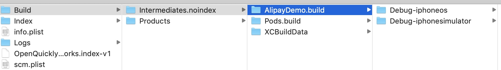
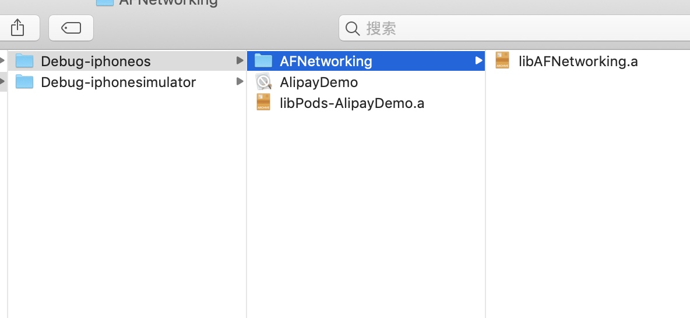
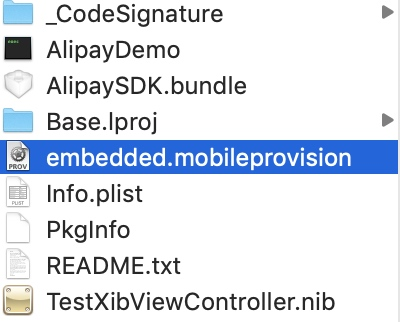
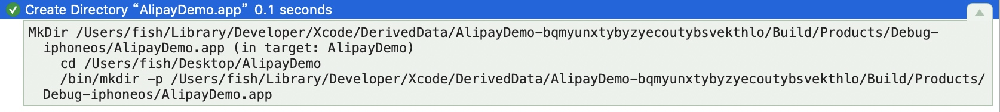
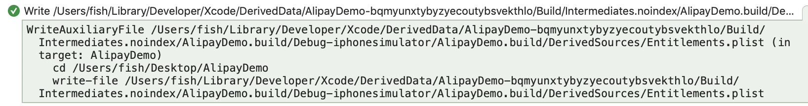
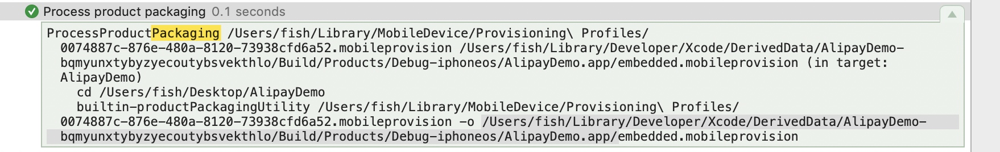
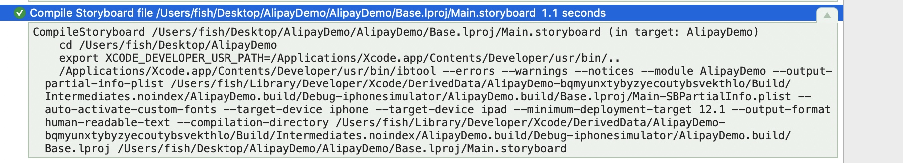

本文学习自戴铭老师的深入剖析 iOS 编译 Clang LLVM
前言
每次项目编译 不论模拟器还是真机都会在Xcode的DerivedData文件夹下创建一个该次编译需要或者产生文件的文件夹(缓存文件夹)

而在build文件夹中就是我们这次编译的主要信息

其中Intermediates.noindex文件夹中为编译的缓存文件(辅助文件)，主要为辅助文件.yml.hamp等
product中为我们编译的结果

包括了pod库打包的.a文件，安装用到的.app文件，.app中还包括资源文件、.plist文件、storybord或者xib编译后的nib文件等

编译流程
在本文中我们编译一个cocopoda程序来做演示
1. 编译信息写入辅助文件，创建文件架构.app文件
创建.app文件夹,用来存放最后生成.app文件的信息

辅助文件用于辅助编译，暂时不知道有什么其他用？？？？
写入辅助文件.yaml文件

写入辅助文件.hamp文件

写入辅助文件Entitlements.plist 和 Entitlements-Simulated.plist

2. 处理文件的打包信息
1.真机打包文件: 真机需要配置文件信息,此时在.app文件夹下为
包含了配置文件信息是应用程序能在真机上运行的必须
这步即将电脑内存放的开发证书证书直接放置到.app文件夹中

见上图中embedded.mobileprovision文件
1.2 模拟器打包文件
模拟器的配置文件信息，是app能在模拟器上运行的必须

2.打包文件的实体信息 .app.xcent 主要为Entilements，信息 （不论模拟器或者真机都有）真机的文件信息中 包括了app信息，开发者信息、app用到的权限信息等

3. 执行 CocoaPod 编译前脚本，checkPods Manifest.lock
默认是在这一步执行，这和你放置这个脚本的位置有关


执行脚本比较这两个.lock文件 判断是否差异
4.编译.m文件，使用 CompileC 和 clang 命令
编译所有的.m文件，包括自己项目的和pod库中的,（为什么没有.h文件呢？因为在预编译的时候都进了其它.m文件啊）
编译后生成.o文件

首先对任务进行描述
CompileC /Users/fish/Library/Developer/Xcode/DerivedData/AlipayDemo-bqmyunxtybyzyecoutybsvekthlo/Build/...
接下来对会更新工作路径
cd /Users/fish/Desktop/AlipayDemo
export LANG=en_US.US-ASCII
接下来就是实际的编译命令
//调用了clang命名
/Applications/Xcode.app/Contents/Developer/Toolchains/XcodeDefault.xctoolchain/usr/bin/clang -x objective-c -arch arm64 -fmessage-length=0 -fdiagnostics-show-note-include-stack -fmacro-backtrace-limit=0 -std=gnu11 -fobjc-arc -fobjc-weak -fmodules -gmodules -fmodules-cache-path=/Users/fi....
//将pch文件一起编译
-include /Users.../Application/PrefixHeader.pch
将文件都编译完成后,会将所有的.o文件写入一个辅助文件 .LinkFileList文件中，便于下一步链接
clang常用命令参数
-x 编译语言比如objective-c
-arch 编译的架构，比如arm7
-f 以-f开头的。
-W 以-W开头的，可以通过这些定制编译警告
-D 以-D开头的，指的是预编译宏，通过这些宏可以实现条件编译
-iPhoneSimulator10.1.sdk 编译采用的iOS SDK版本
-I 把编译信息写入指定的辅助文件
-c 标识符指明需要运行预处理器，语法分析，类型检查，LLVM生成优化以及汇编代码生成.o文件
-F 需要的Framework
-L 连接静态库
-o 编译结果
-inclue 将文件include一起编译(当我们添加的有prefix文件时，就会在这这一步一起编译)
5.将cocoapods中的pod生成.a静态库

使用libTool命令,
-fileList指定上一步编译的所有.o文件等，其记录在一个AFNetworking.LinkFileList的文件中
-framework指定需要依赖的framework
打包为一个.a静态库
swift的话，因为其pod不支持静态库，我们一般podfile中指定 userFramework？？？
6.链接需要的 Framework和library

采用 clang
-L 链接静态库
-framework 添加需要的依赖系统库库
-F 链接framework
链接的内容包括:
- pod库生成的.a文件 即libPods-[ProjectName].a文件
- pod库打包生成的.a文件,例如libAFNetworking.a等链接到工程
- 需要的外部framework文件
- -fileList 将上一步编译生成的所有.o文件 记录在.buile/.LinkFileList中,链接所以工程文件
- 以及其他的一些辅助文件
- 链接需要的系统库
生成项目程序的可执行文件就是一个脚本文件
7. 处理资源文件
编译 ImageAssets
即使多个.xcassets也是一起编译的，而不是分开编译多次

使用actool命令 这个命令只用于这个地方
--output-format human-readable-text
--export-dependency-info 将编译后的生成的文件信息记录在.build文件夹下的assetcatalog_dependencies文件中,包括.xcassets文件、appIcon图片、launchImage图片、生成的唯一.car文件、记录信息的.plist文件
--output-partial-info-plist 生成一个.build/assetcatalog_generated_info.plist ,主要记录了appIcon和launchImage信息

--app-icon AppIcon
--launch-image LaunchImage
--compress-pngs --enable-on-demand-resources YES
--filter-for-device-model iPhone10,3 --filter-for-device-os-version 12.2 --target-device iphone 当前的设备信息
--target-device iphone --minimum-deployment-target 8.0
--compile 将编译生成的.car信息直接放入.app文件夹中
将appIcon、LaunchImage图片文件放入.app文件中
编译 xib
xib编译
ibtool命令
--module指定所属模块名称
--target-device指定面向设备，iPhone/iPad
--auto-activate-custom-fonts
--minimum-deployment-target 8.0 最低支持目标设备系统
--output-partial-info-plist 生成一个-PartialInfo.plist文件 放置在.build文件的辅助文件中
--output-format human-readable-text
--compile 编译生成一个nib文件,直接放置在.app文件中

编译 storyBoard

类似编译xib
ibtool命令
--module指定所属模块名称
--output-partial-info-plist 生成一个 /Base.lproj/Name-SBPartialInfo.plist文件 存放在.build文件夹中
--target-device iphone --target-device ipad
--minimum-deployment-target 8.0
--output-format human-readable-text
--compilation-directory 编译生成.storyboardc文件,放在.build文件中

链接storyBoard文件

使用ibtool命令
指定一些信息
--module指定所属模块名称
--target-device iphone --target-device ipad --minimum-deployment-target 8.0
--output-format human-readable-text
--link将项目模块中所有上一步生成的.storyboardc文件连接到 .app文件夹中
拷贝xib、资源文件
拷贝一些资源文件到我们创建.app文件中
处理 info.plist文件

-genpkginfo 在.app文件夹下，生成了PkgInfo文件 ???
-additionalcontentfile加入多个前面生成的plist文件
-o将合并信息 生成为info.plist,放置在.app文件夹下
8. 生成符号表文件(GenerateDSYMFile)
利用可执行文件中的符号表 生成 符号表文件 .dSYM
当设置build setting中->build option -> dysm 符号表为 -> dwarf-dYSM时会生产该文件 默认debug不生成 release生成

9. 裁剪掉app文件中的符号表
这是只在archive app中才会执行这一步

8. 执行 一些自定义 脚本
这个地方可以执行一些自定义脚本，具体执行位置还是要看 在`build Phases`中的自定义顺序
9. 签名 验证
主要用于真机
使用codesign命令,利用我们之前生成的.app.xcent信息 进行应用签名
10. 创建 .app 文件
生成.app文件 即最终的可安装文件